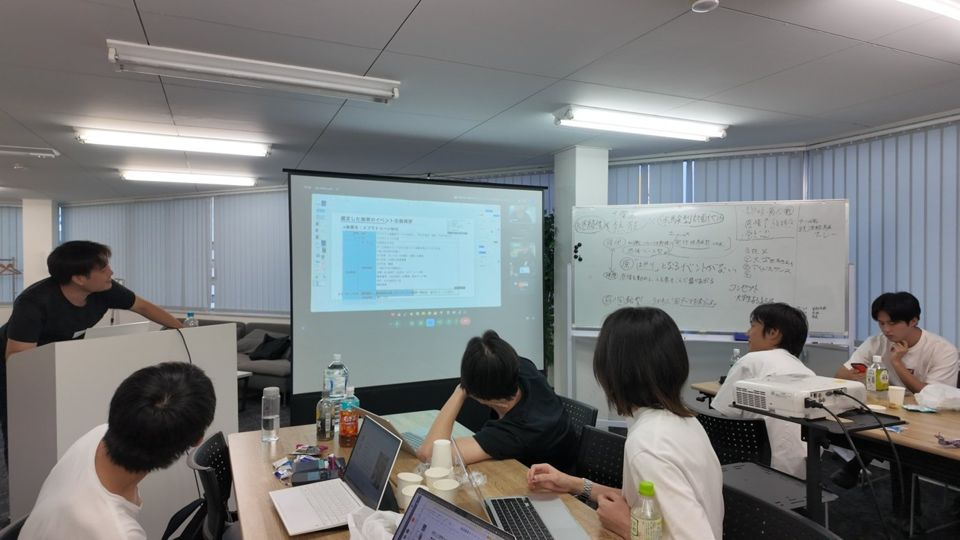
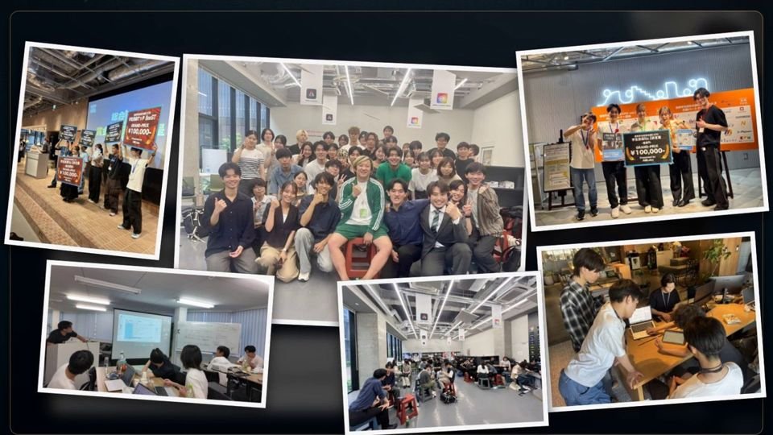

入会を希望する方へ
カジュアル面談の予約
予約から当日まで
面談までの流れ
- 1日時を選んで予約このページの下で、お名前と日時を入れるだけです。
- 2LINEで確認が届くZoomのURLも届きます。前日と当日にもお知らせします。
- 3当日、Zoomで約30分時間になったら、届いたリンクから入ってください。
よくある質問
予約する前に
動画を見ていなくても予約できますか？
はい。このページから予約できます。RVSSの活動を約6分にまとめた動画は、このページのいちばん下から見られます。
予約したあとは、どうなりますか？
LINEで確認のメッセージが届き、ZoomのURLもそこでお送りします。前日と当日にもLINEでお知らせします。
都合が悪くなったときは？
届いたLINEに返信してください。
カジュアル面談とRVSS質問会の違いは？
カジュアル面談は、入会を希望する方向けのZoomで約30分の場です。RVSS質問会は、入会を迷っている方向けの20分の場。
活動の内容や雰囲気を質問できて、申込は日時を選ぶだけです。
RVSS質問会の日時を選ぶ
予約
日時を選んで予約
面談は約30分です。オンライン（Zoom）で行います。
予約の前に見たい方へ
RVSSの紹介動画（約6分）
どんな団体で、どんな活動をしているかをまとめた動画です。

約6分 動画を見る